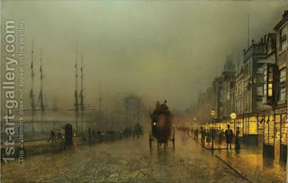

Pesachim 2 - "Light" of the fourteenth of Nissan
On the fifteenth day of the month of Nissan Jews celebrate the Passover and don’t eat or keep anything leavened, or "chametz." Therefore on a day before, as a preparation, one should search for chametz and destroy it. When? - When it becomes "light" of the fourteenth, "ore" in Hebrew.
What does the teacher mean by the word "ore?" Rav Huna said that it means literally light, and Rav Yehudah said that it means night. Initially the Talmud understands that Rav Huna means really in the morning, and one should search for chametz then. The fact that one uses the candle is OK - it’s the early hours of the morning, and the candle helps. Rav Yehudah really means searching at night, as soon as it becomes dark.
First, therefore, we need to clarify the meaning of "ore," or "light." For example, in the phrase "And God called the light ("ore") day" it seems very clear that "ore" is day. However, you can read it in a different way: God called to the light and told it to serve the needs of the day, but these are not the same.
In the end the Talmud cannot conclusively prove from the Torah alone that "light" and "day" are the same. However, by the way God explained the rules to Moses, the chametz is indeed searched for at night, and the difference is due simply to some people calling night "night," while others calling night "light," as an euphemism, for refined speech, trying to avoid the connotation of darkness.
Art: Saturday Night, On The Clyde At Glasgow by John Atkinson Grimshaw 1836 - 1893